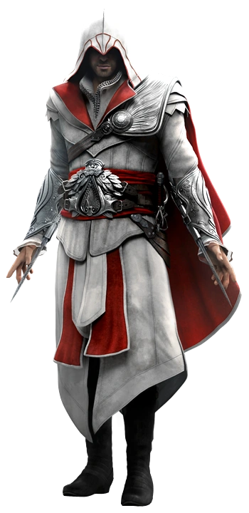
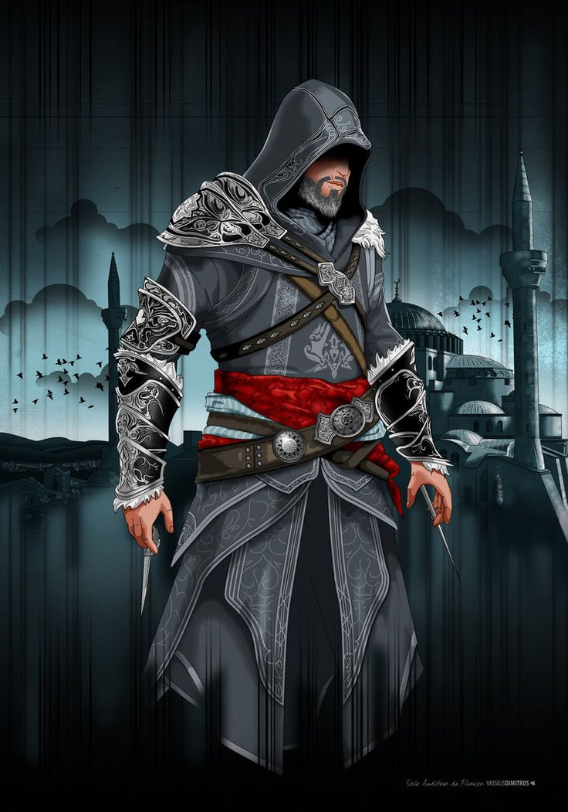
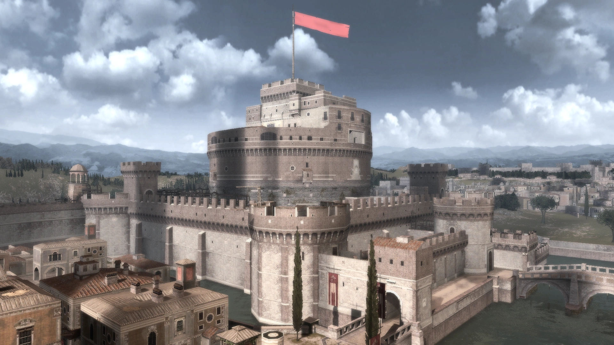
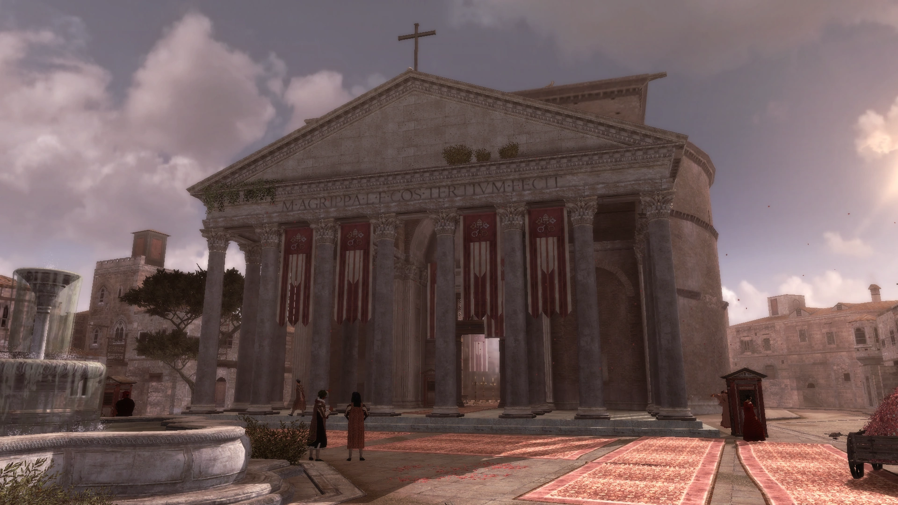
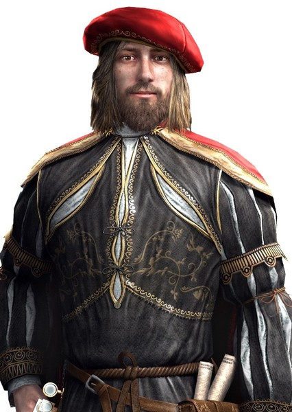
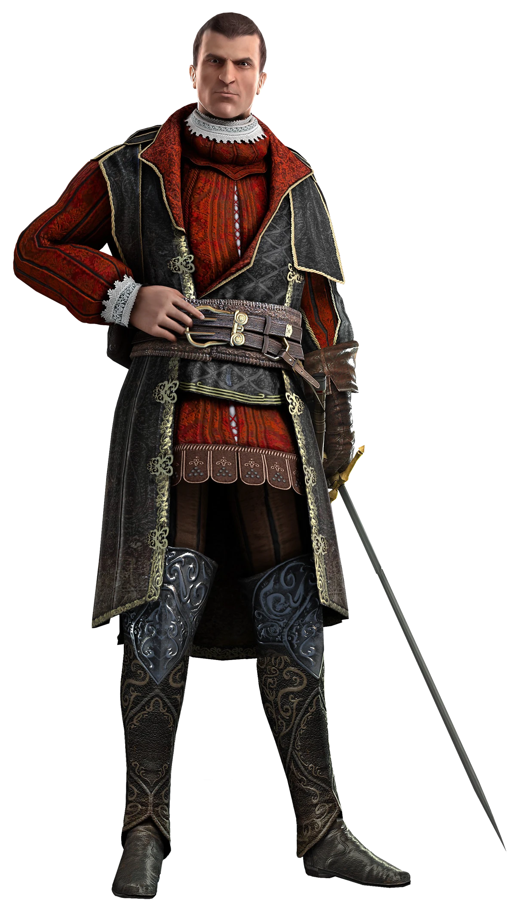
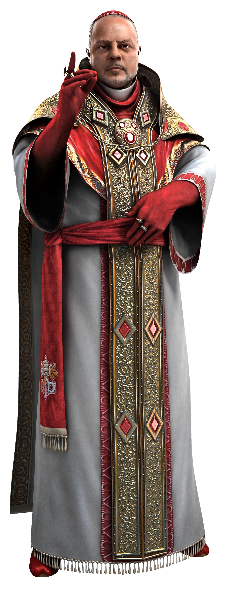
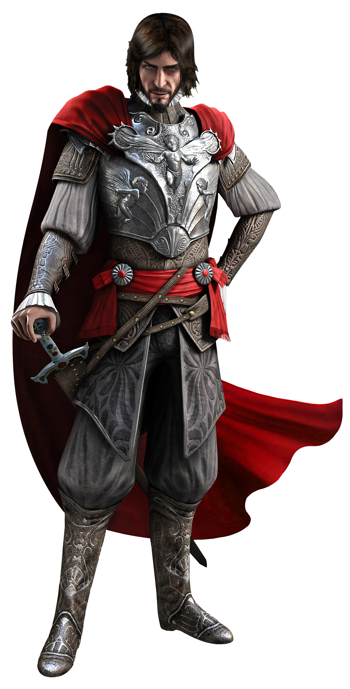
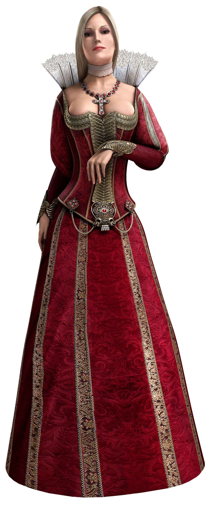

Conhecendo o mundo de Assassin's Creed
Lucas de Carvalho Ramos - 2º ano E
Eu gostaria de conhecer o mundo de Assassin's Creed: Brotherhood porque o jogo
se passa durante a Renascença e mostra lugares históricos incríveis.
A cidade de Roma é cheia de prédios antigos, monumentos e locais históricos
que podemos explorar durante o jogo.
- O jogo se passa principalmente em Roma
- O protagonista é Ezio Auditore
- Foi desenvolvido pela Ubisoft
Agora vamos conhecer melhor esse universo!
O protagonista
O personagem principal do jogo é Ezio Auditore, um mestre assassino
que luta contra a ordem dos Templários.
Durante o jogo ele recruta novos assassinos e lidera a irmandade
para libertar Roma do controle dos inimigos.



A cidade de Roma
Grande parte do jogo acontece em Roma durante o período da Renascença.
No jogo é possível explorar diversos locais históricos, subir em torres,
correr pelos telhados e realizar missões pela cidade.



Personagens históricos que aparecem no jogo
Além da história fictícia de Ezio Auditore, o jogo também
apresenta várias figuras importantes da história real da Itália durante
o período da Renascença.
- Leonardo Da Vinci – O famoso inventor e artista ajuda Ezio criando máquinas e equipamentos especiais.
- Maquiavel – Um pensador e diplomata que faz parte da irmandade dos assassinos.
- Rodrigo Borgia – Também conhecido como Papa Alexandre VI, é um dos principais inimigos da história.
- Cesar Borgia – Filho de Rodrigo Borgia e o grande antagonista do jogo.
- Lucrecia Borgia – Irmã de Cesare e uma figura importante dentro da família Borgia.
A presença dessas pessoas reais ajuda a misturar história com ficção,
fazendo com que o jogo pareça ainda mais imersivo e interessante.





O que isso tem conexão com Roma?
Pouca coisa, porém isso tem muita ligação comigo